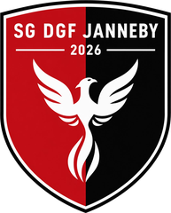
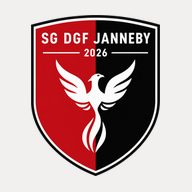

Bis Sonntag für die ganze Folgewoche klicken
Jeder sagt für jeden Termin der nächsten Woche zu oder ab. Die Trainer brauchen ab Montag ein vollständiges Bild.

Zwei Systeme, eine Idee: 4-2-3-1 und 3-5-2. Für jede Position die Aufgaben und animierte Spielsituationen, damit jeder weiß, wo er hingehört.
Tippe auf einen Spieler, um seine Aufgaben zu sehen.
Jede Situation läuft in Phasen ab. Die Pfeile zeigen die nächsten Laufwege und Pässe. Wähle eine Position, um nur ihren Weg zu verfolgen.
Tippe auf eine Position, um sie auf dem Feld hervorzuheben.
Elf Fragen zu beiden Systemen. Die Auflösung kommt direkt nach deiner Antwort.
Im Training und am Spieltag: Nach dem Aufwärmen machen wir diese Übungen gemeinsam, in dieser Reihenfolge.
Jede Übung läuft von der Ausgangsposition über die Bewegung in die Endposition.
Zum Abschluss vier Übungen für Becken, Hüfte und Wirbelsäule.
Nutzt die App zuverlässig und weit im Voraus. Nur so können die Trainer Einheiten und Spiele vernünftig planen und vorbereiten. Da haben wir alle was von ♥
Wir haben zwei Termine pro Woche: Training am Mittwoch um 18:30 Uhr und ein Spiel, meistens am Freitag. Am Sonntag haben alle für beide Termine der Folgewoche geklickt, ab Montag planen die Trainer.
Jeder sagt für jeden Termin der nächsten Woche zu oder ab. Die Trainer brauchen ab Montag ein vollständiges Bild.
Klickt im Optimalfall den ganzen Monat durch und blockt euch die Termine privat entsprechend.
Mit aktivierten Push-Nachrichten bekommt ihr sonntags zwischen 19 und 20 Uhr eine Erinnerung, dass ihr klicken müsst.
Wer in Spielerplus das „?“ wählt, schreibt dazu, wann er die finale Entscheidung trifft. Zum Beispiel: „Entscheide mich bis Dienstagabend.“
Am Trainings- oder Spieltag selbst kannst du in der App nicht mehr absagen. Ruf stattdessen an:
Alle Einnahmen fließen in die Mannschaftskasse, zum Beispiel für die Abschlussfahrt, den Grillabend und Teamevents.
Fehlen, Absagen und Zuspätkommen
Vergessenes und Teamaufgaben
Auf dem Platz und daneben
–Herzen für Stefan

Als App installierenFür schnellen Zugriff auf dem Startbildschirm.